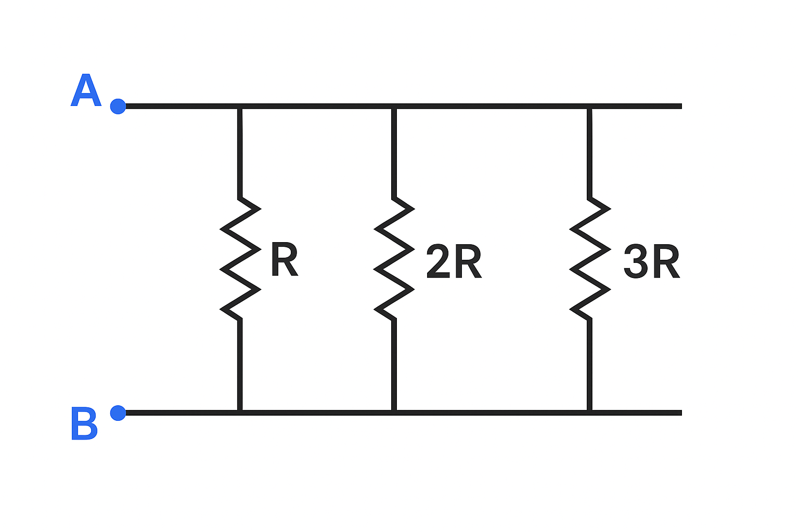
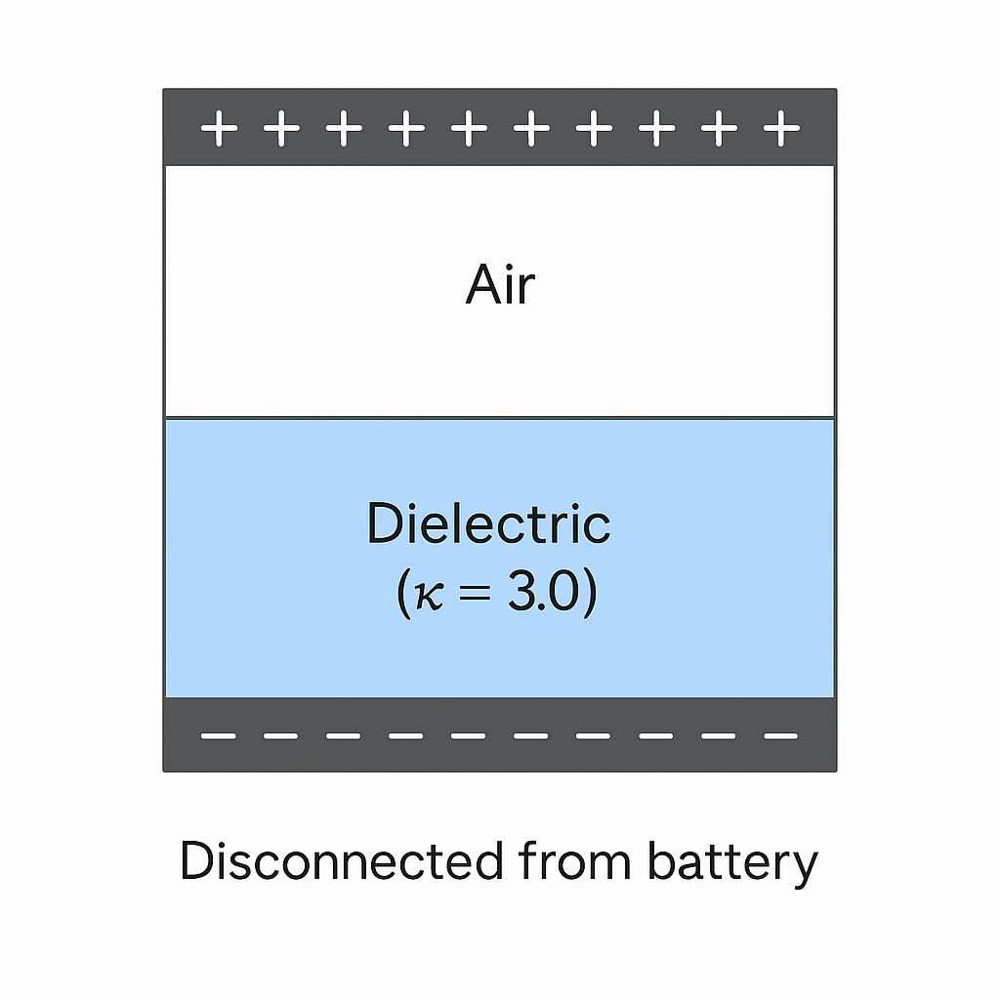
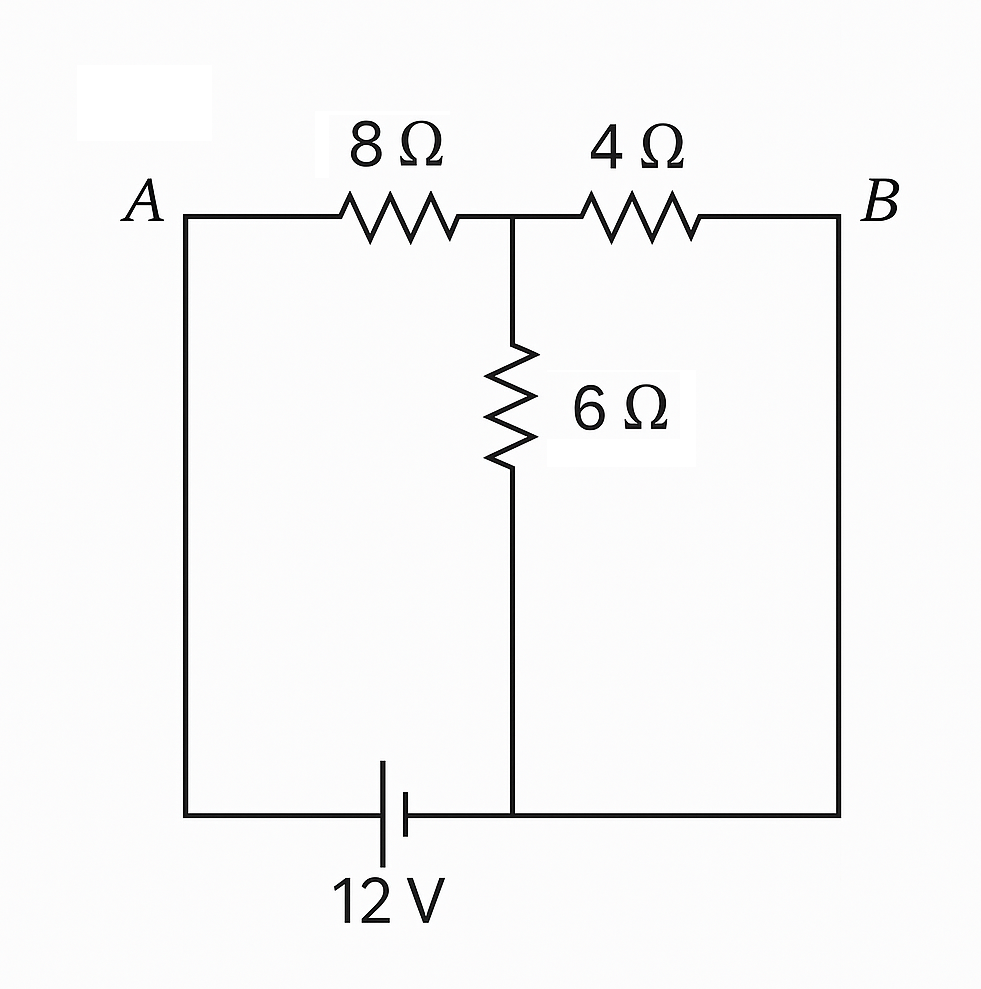
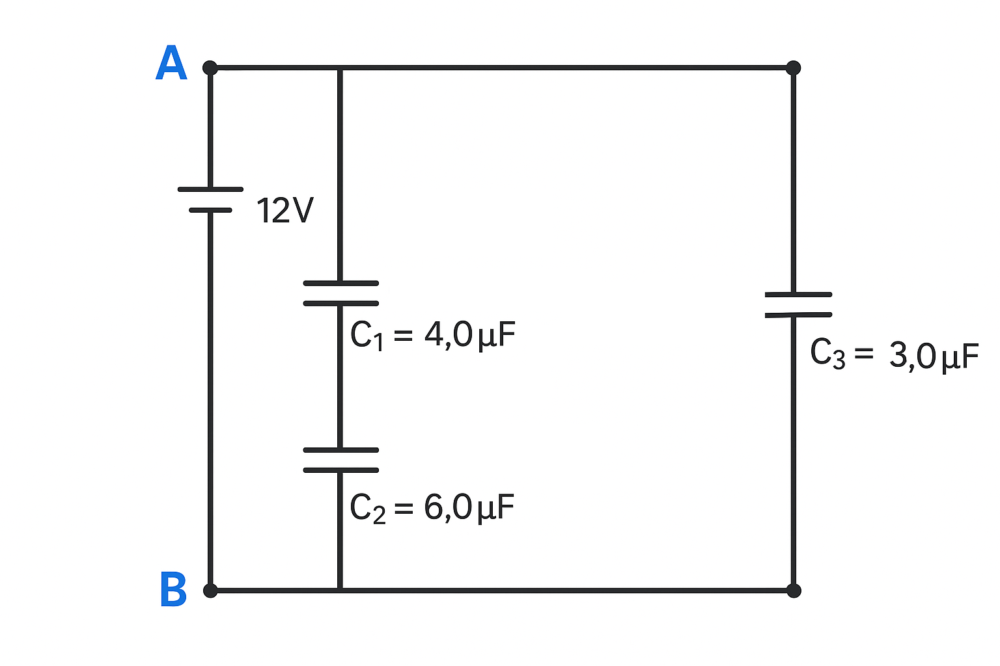

Physics 227
Exam #3
Instructionsα
This exam consists of 10 multiple choice questions. Five are conceptual, five involve calculations. Complete all problems in the allotted time. Show all work. Scratch paper will be provided on request. Any scratch paper returned with the exam at the end of the allotted time may be considered for partial credit during grading.
Equation sheets, useful constants, and mathematical formulas are provided in the last pages of the exam handout.
Multiple Choice Questions
There are 5 questions in this section, each is graded out of a total of 5 points.
[Q1]
A copper wire and an aluminum wire with identical length and cross-sectional area are connected in series. Which statement is correct?
a. The current is larger in the copper wire than in the aluminum wire
b. The electric field is stronger in the copper wire than in the aluminum wire
c. The electric field is stronger in the aluminum wire than in the copper wire
d. The current density is larger in the copper wire than in the aluminum wire
e. The current density is smaller in the copper wire than in the aluminum wire
[Q2]
Which of the following statements about RC circuits is correct?
a. The time constant of an RC circuit depends on the applied voltage
b. When a capacitor discharges through a resistor, the current decreases exponentially
c. In a charging RC circuit, the capacitor voltage increases linearly with time
d. When a battery is connected to an RC circuit, the current is initially zero
e. The energy stored in a fully charged capacitor equals the product of charge and voltage (E = QV)
[Q3]
Three resistors with values R, 2R, and 3R are connected in parallel. The equivalent resistance is:
a. 6R
b. R/6
c. 11R/6
d. 6R/11
e. None of the above

[Q4]
A dielectric slab with constant κ = 3.0 is inserted halfway between the plates of a charged capacitor that has been disconnected from the battery. What happens to the electric field in the region with the dielectric?
a. It decreases by a factor of 3
b. It increases by a factor of 3
c. It remains the same
d. It decreases by a factor of 1.5
e. It increases by a factor of 1.5

[Q5]
What happens to the resistance of a copper wire if both its length and its diameter are doubled?
a. The resistance doubles
b. The resistance stays the same
c. The resistance becomes half the original value
d. The resistance becomes one-fourth of the original value
e. The resistance becomes four times the original value
Calculations
There are 5 questions in this section, each is graded out of a total of 10 points.
[Q6]
A 10.0-meter-long copper wire has a circular cross-section with diameter 1.5 mm. If copper has a resistivity of 1.68 × 10⁻⁸ Ω·m at 20°C, what is the resistance of the wire?
a. 0.95 Ω
b. 9.5 Ω
c. 0.095 Ω
d. 95 Ω
e. 0.48 Ω
[Q7]
In the circuit shown below, what is the equivalent resistance between points A and B?

a. 10 Ω
b. 2.2 Ω
c. 5.3 Ω
d. 8.4 Ω
e. 4.8 Ω
[Q8]
A 6.0 μF capacitor is charged to 120 V and then connected across a 20 kΩ resistor at t = 0. What is the time constant of this circuit?
a. 120 ms
b. 833 ms
c. 1.2 s
d. 0.3 s
e. 83.3 ms
[Q9]
Two capacitors, C₁ = 4.0 μF and C₂ = 6.0 μF, are connected in series across a 12 V battery. A third capacitor, C₃ = 3.0 μF, is connected in parallel with the series combination. What is the equivalent capacitance of the entire circuit?
a. 13.0 μF
b. 5.4 μF
c. 2.4 μF
d. 3.4 μF
e. 7.4 μF

[Q10]
A battery with an EMF of 12.0 V and internal resistance of 0.50 Ω is connected to an external circuit. If a current of 2.0 A flows through the battery, what is the terminal voltage?
a. 12.0 V
b. 11.0 V
c. 13.0 V
d. 10.0 V
e. 11.5 V